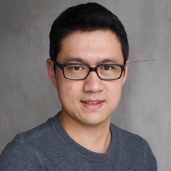

<div class="container">
    <div class="row">
        <div id="speaker-detail" class="col-lg-6 col-lg-offset-3">
            <div class="row">
                <button title="Close (Esc)" type="button" class="mfp-close">×</button>
                <div class="col-md-4 col-lg-4">
                    
                    <br />
                </div>
                <div class="col-md-8 col-lg-8">
                    <h2>Gene-Wei Li, Ph.D. <br>李勁葦博士</h2>
                    <h3>Assistant professor, Biology, MIT</h3>
                    <p>Gene-Wei Li received his PhD training in Physics at Harvard University, where he developed single-molecule approaches to probe the dynamics of gene expression in living cells. He then became a Helen Hay Whitney Postdoctoral Fellow at UCSF. There he combined analytical and high-throughput sequencing approaches to reveal the intricate tuning of protein synthesis in relation to a cell's physiology. He became an assistant professor of Biology at MIT in 2015. His laboratory aims to achieve quantitative understanding of how a cell works, with special emphasis on the control of gene expression and protein synthesis. Gene grew up in Hsinchu and received B.S. in Physics from National Tsinghua University.
                    </p>
                </div>
            </div>
        </div>
    </div>
</div>